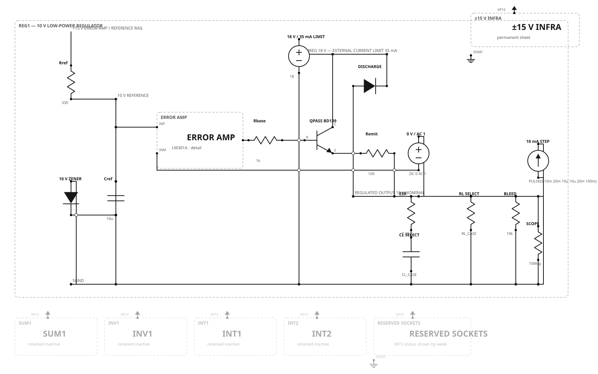
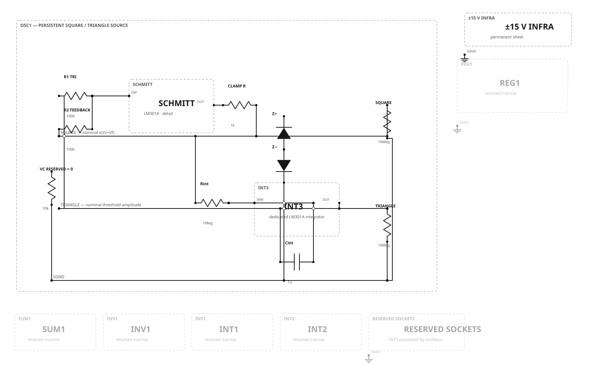

Week 5 · Low-power regulator plant
Figure 5.3 supplies the regulator idea but not a buildable bill of materials. This teaching implementation makes the missing operating envelope explicit: 18 V isolated bench input limited to 35 mA, 10 V nominal output, three resistive loads, three capacitive loads, a declared load-current step, and a zero-DC series loop-injection source.
{kind=link}

| Function | Recommended value | Boundary |
|---|---|---|
| Plant input | 18 V isolated bench supply, 35 mA current limit | No short-circuit test in this phase |
| Reference | 1N4740A nominal 10 V; 330 Ω, 0.5 W feed; 10 µF bypass | Measure actual reference |
| Error amplifier | LM301A on ±15 V; 30 pF C0G | Historical architecture retained |
| Pass path | BD139, 1 kΩ base resistor, 100 Ω emitter resistor | Low-current teaching envelope only |
| Load matrix | 470 Ω / 1 kΩ / 2.2 kΩ; 10 / 47 / 100 µF, 25 V | 0.30 Ω ESR seed is explicit |
| Permanent protection | 10 kΩ bleeder; 1N4002 reverse-discharge diode | Not temporary fixtures |
Topology-tier result: all nine RL/CL cases converged between 9.863 V and 10.016 V.
The AC deck is an executable injection fixture, not yet a trustworthy measured loop-gain model. Optional lead/lag compensation remains uninstalled until the physical crossover is measured.
Week 6 · Persistent square/triangle oscillator
A separate LM301A Schmitt trigger drives the dedicated INT3 integrator. INT1 and INT2 remain available for later computing experiments while this source stays installed. The VC node is retained and grounded; modulation is not silently implemented.
{kind=link}
{kind=link}

| Function | Recommended value | Notes |
|---|---|---|
| Schmitt network | 100 kΩ triangle input; 100 kΩ positive feedback | Equal-ratio source case |
| Limiter | 1 kΩ plus opposed 1N4733A nominal 5.1 V Zeners | Actual limited level sets the threshold |
| Integrator | 1 MΩ, 1 µF film, 35 V, 5% | Dedicated LM301A/INT3, 30 pF |
| Outputs | 10 MΩ declared scope loads | Square and triangle are explicit nets |
| Simulation startup | 10 mV capacitor initial condition | Explicit symmetry breaker; no hidden bleed |
Topology-tier result: square −5.993…+5.993 V, triangle −5.981…+5.990 V, measured period 3.998 s.
What approval means
Approve the circuit choices and presentation style, or mark specific wires/components in the browser. Approval does not yet insert anything into the main capstone.
| Approve Week 5 | Accept this 10 V / tens-of-mA realization of the source's symbolic regulator plant. |
|---|---|
| Approve Week 6 | Accept the dedicated INT3 oscillator, opposed-Zener limiter, and 4 s timing scale. |
| Still deferred | Patch-cord drawings; realistic device-model validation; measured regulator compensation; separate low-voltage modern redesign. |
Canonical authority: Weeks 5–6 graph. Design record: production decisions. Prior approval: Weeks 0–4 acceptance.